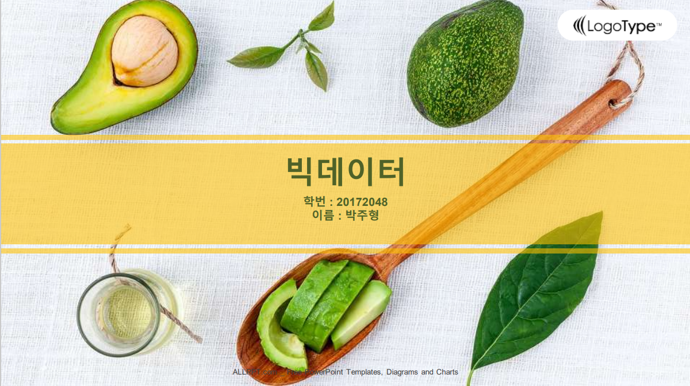

서울 맛집 위치 분석
공공데이터 포털의 Open API로 받은 데이터를 가공해 서울 상권을 분석한 프로젝트입니다. 식사 후 카페를 찾는 흐름에 주목해 개인 카페를 제외한 프랜차이즈 카페의 위치를 살펴보고, 월평균 매출을 100만 원 단위로 끊어 직접 소득분위를 만들어 어느 지역이 가장 활발한지 확인했습니다.

분석 결과
분석 과정
카페 상호명으로 상권 위치 읽기
- Open API로 데이터를 받아 Jupyter Notebook에서 CSV를 가공하고 필요한 항목만 추렸습니다.
- 집계 결과 1위는 개인 카페, 2위 이디야커피, 3위 스타벅스였습니다. 2·3위 상호명으로 지점이 있는 지역을 확인했습니다.
- 소비자가 자주 찾는 이유를 알아보려고 웹크롤링으로 후기를 모아 분석했습니다.
- 이디야커피가 많은 지역은 스타벅스 점포가 적고, 반대도 마찬가지였습니다. 서로 경쟁하는 자리가 아니라 겹치지 않는 자리에서 운영하고 있었습니다.
소득분위로 상권 순위 매기기
- 서울시 전체 상권의 매출을 조사하고, 100만 원 단위로 끊어 1~9분위를 직접 정했습니다.
- 상위 세 곳은 대치동, 서초구, 그리고 서초구 인근 지역이었습니다.
- 대치동은 학원가로 유동인구가 많아 매출이 1위로 나온 것으로 보입니다.
- 서초구는 청계산 등산로와 서래마을, 몽마르트 공원처럼 사람을 끌어들이는 곳이 모여 있어 2위로 이어진 것으로 보입니다.
- 3위도 서초구인데, 2위 지역에서 버스로 15분 거리라 같은 이유가 작용한 것으로 보입니다.